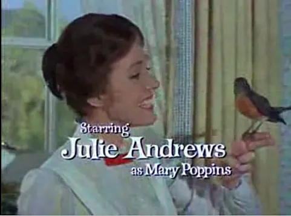
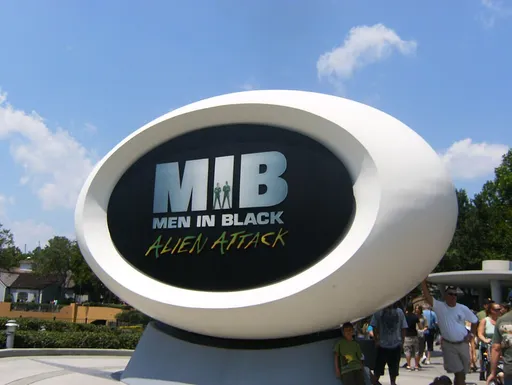
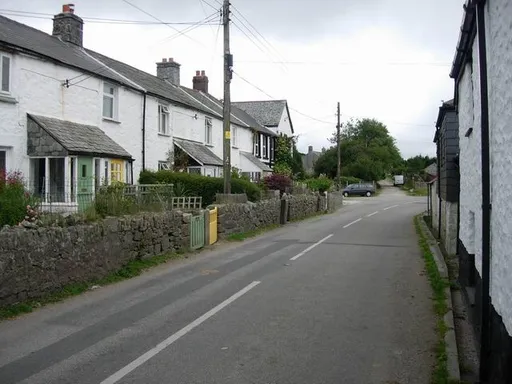
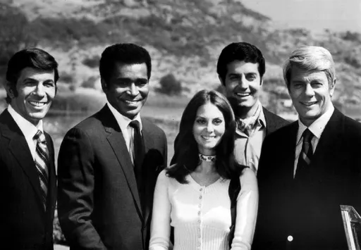
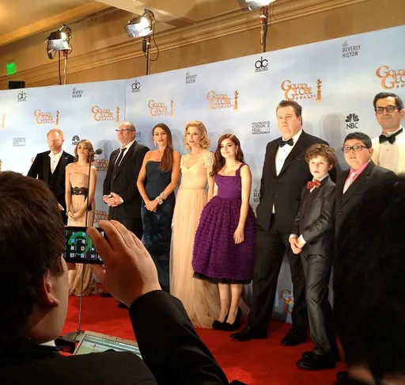
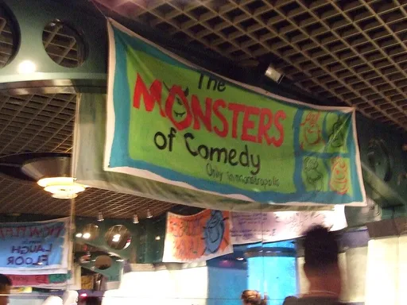
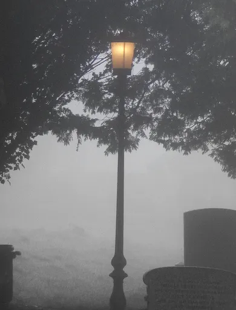
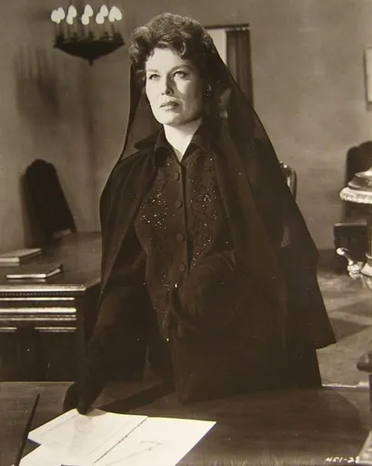
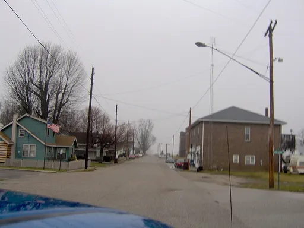
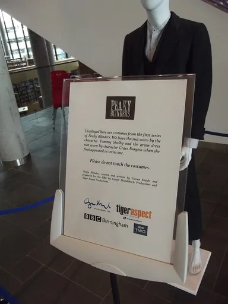

Reject an image by adding its slug to public/charades/charades-movies/reject.txt (append ! to keep it word-only), then re-run node scripts/genimages.mjs.

Mary Poppins mary-poppins Public domain · Trailer screenshot · sourceMegamind megamind CC BY-SA 3.0 · Gage Skidmore · source

Men in Black men-in-black Public domain · Malpass93 · source

Minions minions CC BY-SA 2.0 · Hugh Venables · source

Mission: Impossible mission-impossible Public domain · CBS Television · sourceMoana moana Public domain · Frances Hubbard Flaherty · source

Modern Family modern-family CC BY 2.0 · jdeeringdavis · source

Monsters, Inc. monsters-inc CC BY 2.5 · DearCatastropheWaitress at English Wikipedia · sourceMrs. Doubtfire mrs-doubtfire CC BY 3.0 · Saul0331 · sourceMulan mulan CC BY 2.0 · Anandajoti Bhikkhu from Sadao, Thailand · source

Narnia narnia CC BY-SA 4.0 · Ej.culley · sourceNaruto naruto Public domain · original image: Afnecors derivative work: deerstop · sourceNight at the Museum night-at-the-museum Public domain · LBJ Library · source

Ocean’s Eleven ocean-s-eleven Public domain · unknown (Warner Bros.) · sourceOld School old-school Public domain · Nyttend · source

Onward onward Public domain · Nyttend · sourceOppenheimer oppenheimer Public domain · Image courtesy of US Govt. Defense Threat Reduction Agency · sourcePaddington paddington CC0 · TheFrog001 · sourceParks and Recreation parks-and-recreation CC BY 2.0 · The Peabody Awards · source

Peaky Blinders peaky-blinders CC BY-SA 2.0 · Elliott Brown from Birmingham, United Kingdom · source